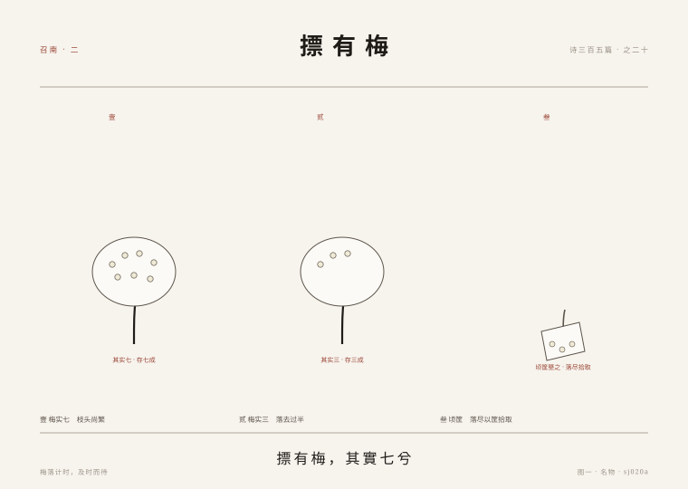
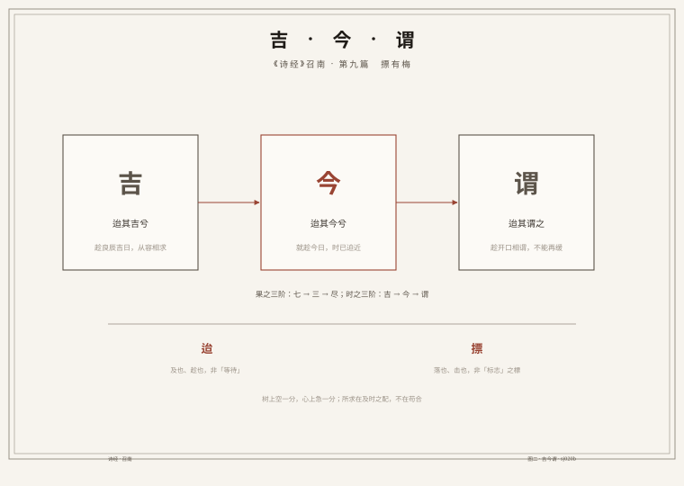

第二十篇 摽有梅
召南 · 之二 SJ020
朗读 · 普通话
依经文原文朗读，章次不读出；配古琴底乐，不改速、不加拖腔。全库同一音色（豆包 TTS），非播音员录制。
一 解题
诗三判：
- 谁在说：一个见梅实渐落、唯恐时不我待的女子。三章由果之存落说到婚嫁之期。
- 说什么事：梅落了，果实还剩七成、三成，至于落尽须以顷筐取之；求我的众士，趁这吉日、趁今日、趁开口相谓之时。
- 为何编在此：召南诸篇写「已成之后靠什么维持」，此篇写「未成之前待什么」——待及时之配。与《行露》一守一待，同是女子之事；彼拒强，此及时。
《毛序》：「《摽有梅》，男女及时也。召南之国，被文王之化，男女得以及时也。」——归之男女及时之化。
朱子《诗集传》：「梅实熟则摽落，女子以比年时之渐晚。盖知婚姻之当及时，而又惧其过时也。」——朱子点明梅落喻年时渐晚，惧过时。
本库的看法：这首诗的骨在「以梅实之落计时，急在迨其吉／今／谓的递进」。
果存七成、三成、落尽，一章比一章少；所待之时由吉日而今日而一言，一章比一章迫。不急嫁，急的是错过。
二 经文
第一章
摽有梅，其實七兮。求我庶士，迨其吉兮。
第二章
摽有梅，其實三兮。求我庶士，迨其今兮。
第三章
摽有梅，頃筐塈之。求我庶士，迨其謂之。
分章：毛传、朱子皆三章，章四句。三章章法全同：先言梅落之候，后言及时之求。一章实七，二章实三，三章筐取；「吉→今→谓」三层，时一步迫一步。
三 韵读
| 一 |
七、吉 |
质部 |
| 二 |
三、今 |
侵部 |
| 三 |
塈、謂 |
物部（微物入声） |
首章质部短促，二章侵部收鼻，三章物部入声利落。末章「谓」字收束全篇：果已落尽，所待只剩一句话。
四 字义名物
- 摽（biào）——击落，坠落；梅熟自落。不是「標（标志）」。
- 有梅——梅树。有，语助，无实义。
- 其實七兮——果实尚存七成。七，约举之数；不是定数七枚。
- 庶士——众士，指求婚之男子。庶，众。
- 迨（dài）——及，趁。不是「等待」之待。
- 吉——吉日，良时。
- 其實三兮——果实尚存三成。
- 今——今日，即今之时；较「吉」更近。
- 頃筐——倾筐，斜口之筐；顷，倾也。
- 塈（jì）——取，与；拾取落梅而归。一说「塈」为取盈、盛敛；从「取／与」义。
- 謂——相告，相谓；以言相许、开口订约。不是「所谓」之谓。
五 今译
第一章
梅子落了，树上果实还剩七成。追求我的众士，趁这良辰吉日吧。
第二章
梅子落了，树上果实还剩三成。追求我的众士，就趁今日吧。
第三章
梅子落尽，用顷筐拾取。追求我的众士，趁开口相谓之时吧。
译注：「七」「三」译「七成」「三成」，表存落之约势，不核实数；「塈」译「拾取」，「谓」译「开口相谓」。「迨」译「趁」，是及、趁之义，不作等待解。
六 章旨
一章：实七。梅始落，尚存七成；待之以吉日，从容相求。
二章：实三。落去过半，仅存三成；待之以今日，时已迫近。
三章：筐取。落尽须以筐拾；待之以一言，不能再缓。
三章合起来：果之三阶是七→三→尽（落者渐多），时之三阶是吉→今→谓（期限渐短）。
树上空一分，心上急一分。
七 诗教
- 兴：以梅实坠落起兴；落果即逝年，所兴即所忧。
- 观：可观一「时」。惜年华之晚，而不失其正；所求在及时之配，不在苟合。
- 群：庶士是众称，所求非一人之私系；女子以礼待众士之媒。
- 怨：无怨。有过时之惧，无怼人之辞；急切而不轻薄。
八 分寸与边界
- 不可把「迨」解作等待。迨是及、趁；「迨其吉」即趁此吉日，不是等到吉日。
- 不可把「七」「三」坐实为七枚、三枚果实。乃约举存落之成数；落者与存者相对为言。
- 不可把「谓」解作所谓、言说。此谓相告相谓，以言相许；是订约之事。
- 不可把此篇读成女子自媒自荐的轻薄诗。所求是「庶士」以礼来求，女子但期及时；与《行露》守礼拒强，正反相成。
- 不可把「塈」解作「既」或叹息之辞。塈为取、与，拾取落梅；一说盛敛，义近。
九 存疑
- 说者性别：《毛序》朱子皆以为女子自言（待嫁之女）；一说为媒者劝及时，一说男子求女之辞。本库取待嫁女子。
- 「梅」谐「媒」：三家或谓梅谐媒，隐喻媒妁；毛传、朱子只作梅实。本库正文从梅实，谐媒之说存录。
- 「塈」之训：一说取也、与也，一说取盈（尽取），一说「塈」通「餼」（餽馈）。本库取拾取与归。
- 七、三是否实数：一说七、三为树上实存之确数，一说喻落存之约势。本库取约势。
- 编次与礼制：《周礼·媒氏》仲春会男女，一说此篇咏其时；一说是过时之叹，与礼制无涉。本库存两说，不强系。
十 跨典
- 《周礼·地官·媒氏》「仲春之月，令会男女；于是时也，奔者不禁」——及时相配之古制，此篇「庶士」「迨」字皆其事之背景。
- 《召南·行露》「谁谓女无家……亦不女从」——同卷女子之诗；彼无礼则拒，此及时则待，一守一待。
- 《郑风·溱洧》「维士与女，伊其相谑」——男女相与之风；彼写游观之盛，此写时暮之惧。
- 《邶风·匏有苦叶》「人涉卬否，卬须我友」——同是待配之诗；彼涉水而须友，此落梅而及时。
- 《诗经·梅》之他见：《秦风·终南》「有条其梅」；梅在《诗》中或为木名，或喻时暮，取象各别。
十一 双卡与图
双卡五对：
| 摽（击落·坠落） |
標（标志，误字） |
| 七（存七成） |
七枚（坐实数，误） |
| 迨（及·趁） |
等待（误训） |
| 吉（吉日） |
今（今日） |
| 谓（相告相许） |
所谓（误训） |

图一 · 梅落·七成三成·顷筐 名物图

图二 · 吉 · 今 · 谓 义理图
读图三处：
- 果之多少是树上的疏密：左格画满枝梅实，中二格稀落，右格枝头空空、筐中拾梅；三格比的是存落，不是画三种树。
- 顷筐是斜口之筐：右格筐口一侧低；落梅在筐中，不在枝头。
- 三「迨」是三层期限：义理图三格由吉日而今日而一言；时限一格短过一格，不可互换。